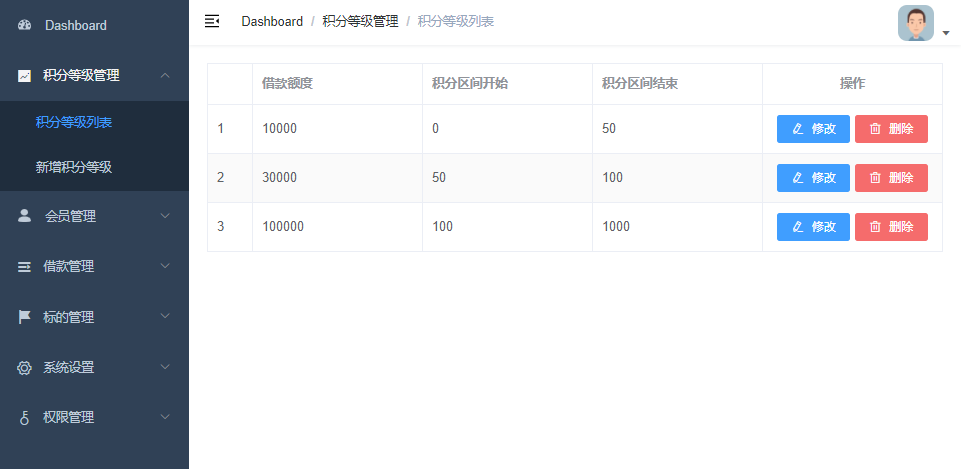
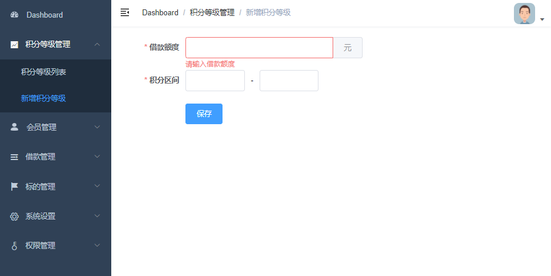
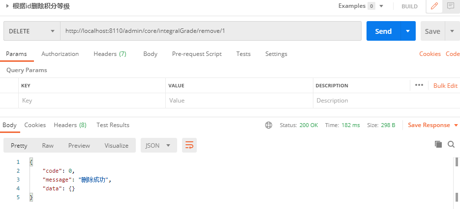
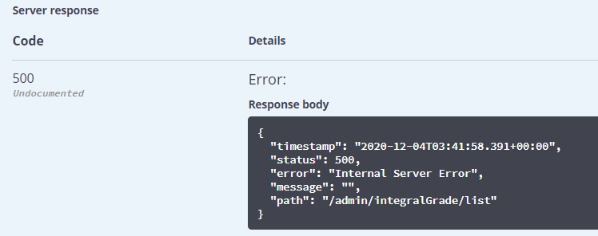
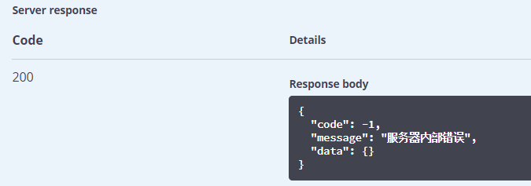
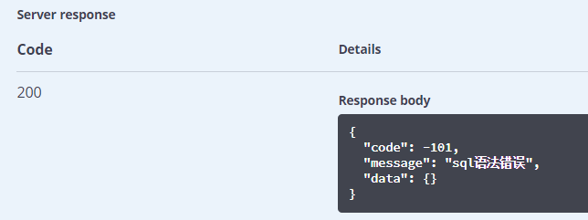
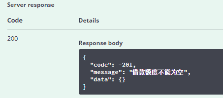
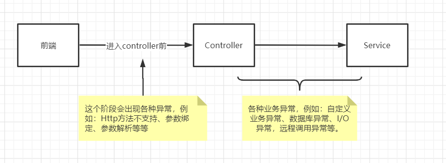
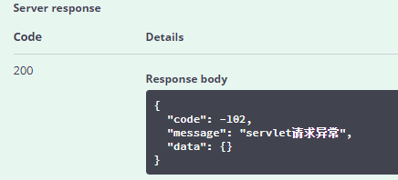
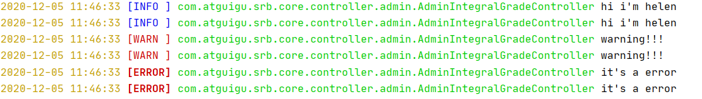

后端接口工程搭建
Part03-后端接口工程搭建¶
01-创建尚融宝接口工程¶
需求¶
积分等级CRUD列表和表单


一、创建父工程srb¶
1、创建SpringBoot项目¶
Group：com.atguigu
Artifact：srb
2、删除src目录¶
3、配置SpringBoot版本¶
<parent>
<groupId>org.springframework.boot</groupId>
<artifactId>spring-boot-starter-parent</artifactId>
<version>2.3.4.RELEASE</version>
</parent>
4、配置pom依赖版本号¶
<properties>
<java.version>1.8</java.version>
<spring-cloud-alibaba.version>2.2.2.RELEASE</spring-cloud-alibaba.version>
<spring-cloud.version>Hoxton.SR8</spring-cloud.version>
<mybatis-plus.version>3.4.1</mybatis-plus.version>
<velocity.version>2.0</velocity.version>
<swagger.version>2.9.2</swagger.version>
<swagger-bootstrap-ui.version>1.9.2</swagger-bootstrap-ui.version>
<commons-lang3.version>3.9</commons-lang3.version>
<commons-fileupload.version>1.3.1</commons-fileupload.version>
<commons-io.version>2.6</commons-io.version>
<alibaba.easyexcel.version>2.1.1</alibaba.easyexcel.version>
<apache.xmlbeans.version>3.1.0</apache.xmlbeans.version>
<fastjson.version>1.2.28</fastjson.version>
<gson.version>2.8.2</gson.version>
<json.version>20170516</json.version>
<aliyun-java-sdk-core.version>4.3.3</aliyun-java-sdk-core.version>
<aliyun-sdk-oss.version>3.10.2</aliyun-sdk-oss.version>
<jodatime.version>2.10.1</jodatime.version>
<jwt.version>0.7.0</jwt.version>
<httpclient.version>4.5.1</httpclient.version>
</properties>
5、配置pom依赖¶
<dependencyManagement>
<dependencies>
<!--Spring Cloud-->
<dependency>
<groupId>org.springframework.cloud</groupId>
<artifactId>spring-cloud-dependencies</artifactId>
<version>${spring-cloud.version}</version>
<type>pom</type>
<scope>import</scope>
</dependency>
<!--Spring Cloud Alibaba-->
<dependency>
<groupId>com.alibaba.cloud</groupId>
<artifactId>spring-cloud-alibaba-dependencies</artifactId>
<version>${spring-cloud-alibaba.version}</version>
<type>pom</type>
<scope>import</scope>
</dependency>
<!--mybatis-plus-->
<dependency>
<groupId>com.baomidou</groupId>
<artifactId>mybatis-plus-boot-starter</artifactId>
<version>${mybatis-plus.version}</version>
</dependency>
<!--mybatis-plus 代码生成器-->
<dependency>
<groupId>com.baomidou</groupId>
<artifactId>mybatis-plus-generator</artifactId>
<version>${mybatis-plus.version}</version>
</dependency>
<!-- Mybatis Plus 代码生成器模板引擎, -->
<dependency>
<groupId>org.apache.velocity</groupId>
<artifactId>velocity-engine-core</artifactId>
<version>${velocity.version}</version>
</dependency>
<!--swagger-->
<dependency>
<groupId>io.springfox</groupId>
<artifactId>springfox-swagger2</artifactId>
<version>${swagger.version}</version>
</dependency>
<!--swagger ui-->
<dependency>
<groupId>io.springfox</groupId>
<artifactId>springfox-swagger-ui</artifactId>
<version>${swagger.version}</version>
</dependency>
<!--swagger ui-->
<dependency>
<groupId>com.github.xiaoymin</groupId>
<artifactId>swagger-bootstrap-ui</artifactId>
<version>${swagger-bootstrap-ui.version}</version>
</dependency>
<!--commons-lang3-->
<dependency>
<groupId>org.apache.commons</groupId>
<artifactId>commons-lang3</artifactId>
<version>${commons-lang3.version}</version>
</dependency>
<!--文件上传-->
<dependency>
<groupId>commons-fileupload</groupId>
<artifactId>commons-fileupload</artifactId>
<version>${commons-fileupload.version}</version>
</dependency>
<!--commons-io-->
<dependency>
<groupId>commons-io</groupId>
<artifactId>commons-io</artifactId>
<version>${commons-io.version}</version>
</dependency>
<!--excel解析-->
<dependency>
<groupId>com.alibaba</groupId>
<artifactId>easyexcel</artifactId>
<version>${alibaba.easyexcel.version}</version>
</dependency>
<!--excel解析依赖-->
<dependency>
<groupId>org.apache.xmlbeans</groupId>
<artifactId>xmlbeans</artifactId>
<version>${apache.xmlbeans.version}</version>
</dependency>
<!--json-->
<dependency>
<groupId>com.alibaba</groupId>
<artifactId>fastjson</artifactId>
<version>${fastjson.version}</version>
</dependency>
<dependency>
<groupId>org.json</groupId>
<artifactId>json</artifactId>
<version>${json.version}</version>
</dependency>
<dependency>
<groupId>com.google.code.gson</groupId>
<artifactId>gson</artifactId>
<version>${gson.version}</version>
</dependency>
<!--阿里云SDK远程调用-->
<dependency>
<groupId>com.aliyun</groupId>
<artifactId>aliyun-java-sdk-core</artifactId>
<version>${aliyun-java-sdk-core.version}</version>
</dependency>
<!--阿里云文件管理-->
<dependency>
<groupId>com.aliyun.oss</groupId>
<artifactId>aliyun-sdk-oss</artifactId>
<version>${aliyun-sdk-oss.version}</version>
</dependency>
<!--日期时间工具-->
<dependency>
<groupId>joda-time</groupId>
<artifactId>joda-time</artifactId>
<version>${jodatime.version}</version>
</dependency>
<!--jwt工具-->
<dependency>
<groupId>io.jsonwebtoken</groupId>
<artifactId>jjwt</artifactId>
<version>${jwt.version}</version>
</dependency>
<!--httpclient-->
<dependency>
<groupId>org.apache.httpcomponents</groupId>
<artifactId>httpclient</artifactId>
<version>${httpclient.version}</version>
</dependency>
</dependencies>
</dependencyManagement>
<dependencies>
<dependency>
<groupId>org.springframework.boot</groupId>
<artifactId>spring-boot-starter-test</artifactId>
<scope>test</scope>
<exclusions>
<exclusion>
<groupId>org.junit.vintage</groupId>
<artifactId>junit-vintage-engine</artifactId>
</exclusion>
</exclusions>
</dependency>
</dependencies>
二、创建模块guigu-common¶
1、创建Maven模块¶
在srb下创建普通maven模块
Group：com.atguigu
Artifact：guigu-common
2、配置pom¶
<dependencies>
<!--lombok用来简化实体类：需要安装lombok插件-->
<dependency>
<groupId>org.projectlombok</groupId>
<artifactId>lombok</artifactId>
</dependency>
<dependency>
<groupId>org.springframework.boot</groupId>
<artifactId>spring-boot-starter-web</artifactId>
</dependency>
</dependencies>
三、创建模块service-base¶
1、创建Maven模块¶
在srb下创建普通maven模块
Group：com.atguigu
Artifact：service-base
2、配置pom¶
注意：依赖guigu-common
<dependencies>
<dependency>
<groupId>com.atguigu</groupId>
<artifactId>guigu-common</artifactId>
<version>0.0.1-SNAPSHOT</version>
</dependency>
<!--swagger-->
<dependency>
<groupId>io.springfox</groupId>
<artifactId>springfox-swagger2</artifactId>
</dependency>
<!--swagger ui-->
<dependency>
<groupId>io.springfox</groupId>
<artifactId>springfox-swagger-ui</artifactId>
</dependency>
</dependencies>
四、创建模块service-core¶
1、创建Maven模块¶
在srb下创建普通maven模块
Group：com.atguigu
Artifact：service-core
2、配置pom¶
注意：依赖service-base
<dependencies>
<dependency>
<groupId>com.atguigu</groupId>
<artifactId>service-base</artifactId>
<version>0.0.1-SNAPSHOT</version>
</dependency>
<dependency>
<groupId>org.springframework.boot</groupId>
<artifactId>spring-boot-starter-web</artifactId>
</dependency>
<!--mysql-->
<dependency>
<groupId>mysql</groupId>
<artifactId>mysql-connector-java</artifactId>
</dependency>
<!--mybatis-plus-->
<dependency>
<groupId>com.baomidou</groupId>
<artifactId>mybatis-plus-boot-starter</artifactId>
</dependency>
<!--mybatis-plus 代码生成器-->
<dependency>
<groupId>com.baomidou</groupId>
<artifactId>mybatis-plus-generator</artifactId>
</dependency>
<!-- Mybatis Plus 代码生成器模板引擎, -->
<dependency>
<groupId>org.apache.velocity</groupId>
<artifactId>velocity-engine-core</artifactId>
</dependency>
<!--lombok用来简化实体类：需要安装lombok插件-->
<dependency>
<groupId>org.projectlombok</groupId>
<artifactId>lombok</artifactId>
</dependency>
</dependencies>
五、代码生成器¶
1、创建数据库¶
创建数据库srb_core
并执行sql脚本初始化数据结构和数据
2、相关依赖¶
<!--mybatis-plus 代码生成器-->
<dependency>
<groupId>com.baomidou</groupId>
<artifactId>mybatis-plus-generator</artifactId>
<version>3.4.1</version>
</dependency>
<!-- Mybatis Plus 代码生成器模板引擎, -->
<dependency>
<groupId>org.apache.velocity</groupId>
<artifactId>velocity-engine-core</artifactId>
<version>2.0</version>
</dependency>
3、创建代码生成器¶
在test目录中创建测试用例，并执行
package com.atguigu.srb.core;
public class CodeGenerator {
@Test
public void genCode() {
// 1、创建代码生成器
AutoGenerator mpg = new AutoGenerator();
// 2、全局配置
GlobalConfig gc = new GlobalConfig();
String projectPath = System.getProperty("user.dir");
gc.setOutputDir(projectPath + "/src/main/java");
gc.setAuthor("Helen");
gc.setOpen(false); //生成后是否打开资源管理器
gc.setServiceName("%sService"); //去掉Service接口的首字母I
gc.setIdType(IdType.AUTO); //主键策略
gc.setSwagger2(true);//开启Swagger2模式
mpg.setGlobalConfig(gc);
// 3、数据源配置
DataSourceConfig dsc = new DataSourceConfig();
dsc.setUrl("jdbc:mysql://localhost:3306/srb_core?serverTimezone=GMT%2B8&characterEncoding=utf-8");
dsc.setDriverName("com.mysql.cj.jdbc.Driver");
dsc.setUsername("root");
dsc.setPassword("123456");
dsc.setDbType(DbType.MYSQL);
mpg.setDataSource(dsc);
// 4、包配置
PackageConfig pc = new PackageConfig();
pc.setParent("com.atguigu.srb.core");
pc.setEntity("pojo.entity"); //此对象与数据库表结构一一对应，通过 DAO 层向上传输数据源对象。
mpg.setPackageInfo(pc);
// 5、策略配置
StrategyConfig strategy = new StrategyConfig();
strategy.setNaming(NamingStrategy.underline_to_camel);//数据库表映射到实体的命名策略
strategy.setColumnNaming(NamingStrategy.underline_to_camel);//数据库表字段映射到实体的命名策略
strategy.setEntityLombokModel(true); // lombok
strategy.setLogicDeleteFieldName("is_deleted");//逻辑删除字段名
strategy.setEntityBooleanColumnRemoveIsPrefix(true);//去掉布尔值的is_前缀（确保tinyint(1)）
strategy.setRestControllerStyle(true); //restful api风格控制器
mpg.setStrategy(strategy);
// 6、执行
mpg.execute();
}
}
扩展知识：https://zhuanlan.zhihu.com/p/102389552 VO，BO，PO，DO，DTO的区别
六、启动应用程序¶
1、创建application.yml文件¶
server:
port: 8110 # 服务端口
spring:
profiles:
active: dev # 环境设置
application:
name: service-core # 服务名
datasource: # mysql数据库连接
type: com.zaxxer.hikari.HikariDataSource
driver-class-name: com.mysql.cj.jdbc.Driver
url: jdbc:mysql://localhost:3306/srb_core?serverTimezone=GMT%2B8&characterEncoding=utf-8
username: root
password: 123456
mybatis-plus: #mybatis
configuration:
log-impl: org.apache.ibatis.logging.stdout.StdOutImpl
mapper-locations: classpath:com/atguigu/srb/core/mapper/xml/*.xml
2、创建SpringBoot配置文件¶
在service-core中创建config包，创建MybatisPlusConfig类
package com.atguigu.srb.core.config;
@Configuration
@MapperScan("com.atguigu.srb.core.mapper")
@EnableTransactionManagement //事务处理
public class MybatisPlusConfig {
@Bean
public MybatisPlusInterceptor mybatisPlusInterceptor() {
MybatisPlusInterceptor interceptor = new MybatisPlusInterceptor();
interceptor.addInnerInterceptor(new PaginationInnerInterceptor(DbType.MYSQL));//分页
return interceptor;
}
}
3、创建SpringBoot启动类¶
注意：扫描com.atguigu.srb
package com.atguigu.srb.core;
@SpringBootApplication
@ComponentScan({"com.atguigu.srb"})
public class ServiceCoreApplication {
public static void main(String[] args) {
SpringApplication.run(ServiceCoreApplication.class, args);
}
}
4、运行启动类¶
查看控制台8110端口是否成功启动
02-积分等级CRUD¶
一、积分等级列表接口¶
1、编写积分等级管理接口¶
在controller中添加admin包，添加AdminIntegralGradeController类
package com.atguigu.srb.core.controller.admin;
@RestController
@RequestMapping("/admin/core/integralGrade")
public class AdminIntegralGradeController {
@Resource
private IntegralGradeService integrationService;
@GetMapping("/list")
public List<IntegralGrade> listAll(){
return integrationService.list();
}
}
2、测试¶
重启服务，访问： http://localhost:8110/admin/core/integralGrade/list 查看结果json数据
二、逻辑删除接口¶
1、添加删除方法¶
AdminIntegralGradeController添加removeById方法
@DeleteMapping("/remove/{id}")
public boolean removeById(@PathVariable Long id){
return integrationService.removeById(id);
}
2、使用postman测试删除¶

三、配置Swagger2¶
¶
1、相关依赖¶
确认service-base中添加了swagger相关依赖
<dependencies>
<!--swagger-->
<dependency>
<groupId>io.springfox</groupId>
<artifactId>springfox-swagger2</artifactId>
<version>2.9.2</version>
</dependency>
<!--swagger ui-->
<dependency>
<groupId>io.springfox</groupId>
<artifactId>springfox-swagger-ui</artifactId>
<version>2.9.2</version>
</dependency>
</dependencies>
2、Swagger2配置文件¶
在service-base中创建Swagger2Config
package com.atguigu.srb.base.config;
@Configuration
@EnableSwagger2
public class Swagger2Config {
@Bean
public Docket adminApiConfig(){
return new Docket(DocumentationType.SWAGGER_2)
.groupName("adminApi")
.apiInfo(adminApiInfo())
.select()
//只显示admin路径下的页面
.paths(Predicates.and(PathSelectors.regex("/admin/.*")))
.build();
}
private ApiInfo adminApiInfo(){
return new ApiInfoBuilder()
.title("尚融宝后台管理系统-API文档")
.description("本文档描述了尚融宝后台管理系统接口")
.version("1.0")
.contact(new Contact("Helen", "http://atguigu.com", "55317332@qq.com"))
.build();
}
}
3、查看Swagger文档¶
重启服务器查看接口文档：http://localhost:8110/swagger-ui.html
4、常见注解¶
**实体类注解：**entity的实体类中可以添加一些自定义设置，例如：
@ApiModelProperty(value = "创建时间", example = "2019-01-01 8:00:00")
private Date createTime;
@ApiModelProperty(value = "更新时间", example = "2019-01-01 8:00:00")
private Date updateTime;
controller注解：
定义在类上
@Api(tags = "积分等级管理")
定义在方法上
@ApiOperation("积分等级列表")
@ApiOperation(value = "根据id删除积分等级", notes = "逻辑删除")
定义在参数上
@ApiParam(value = "数据id", required = true, example = "1")
03-统一返回结果¶
一、定义统一返回结果¶
1、数据格式的定义¶
项目中我们会将响应封装成json返回，一般我们会将所有接口的数据格式统一， 使前端对数据的操作更一致、轻松。
一般情况下，统一返回数据格式没有固定的格式，只要能描述清楚返回的数据状态以及要返回的具体数据就可以。但是一般会包含状态码、返回消息、数据这几部分内容
例如，我们的系统要求返回的基本数据格式如下：
成功：
{
"code": 0,
"message": "成功",
"data": 数据
}
失败：
{
"code": -1,
"message": "失败",
"data": null
}
因此，我们定义统一结果
{
"code": 数字, //业务响应码
"message": 字符串, //返回消息
"data": 对象 //返回数据
}
2、创建枚举¶
在guigu-common中创建result包，创建枚举 ResponseEnum
package com.atguigu.common.result;
@Getter
@AllArgsConstructor
@ToString
public enum ResponseEnum {
SUCCESS(0, "成功"),
ERROR(-1, "服务器内部错误"),
;
// 响应状态码
private Integer code;
// 响应信息
private String message;
}
3、定义同统一结果类¶
package com.atguigu.common.result;
@Data
public class R {
private Integer code;
private String message;
private Map<String, Object> data = new HashMap();
/**
* 构造器私有
*/
private R(){}
/**
* 返回成功
*/
public static R ok(){
R r = new R();
r.setCode(ResponseEnum.SUCCESS.getCode());
r.setMessage(ResponseEnum.SUCCESS.getMessage());
return r;
}
/**
* 返回失败
*/
public static R error(){
R r = new R();
r.setCode(ResponseEnum.ERROR.getCode());
r.setMessage(ResponseEnum.ERROR.getMessage());
return r;
}
/**
* 设置特定结果
*/
public static R setResult(ResponseEnum responseEnum){
R r = new R();
r.setCode(responseEnum.getCode());
r.setMessage(responseEnum.getMessage());
return r;
}
public R message(String message){
this.setMessage(message);
return this;
}
public R code(Integer code){
this.setCode(code);
return this;
}
public R data(String key, Object value){
this.data.put(key, value);
return this;
}
public R data(Map<String, Object> map){
this.setData(map);
return this;
}
}
三、使用统一返回结果¶
1、修改listAll¶
@ApiOperation("积分等级列表")
@GetMapping("/list")
public R listAll(){
List<IntegralGrade> list = integralGradeService.list();
return R.ok().data("list", list);
}
2、修改removeById¶
@ApiOperation(value = "根据id删除积分等级", notes="逻辑删除")
@DeleteMapping("/remove/{id}")
public R removeById(
@ApiParam(value = "数据id", required = true, example = "1")
@PathVariable Long id){
boolean result = integralGradeService.removeById(id);
if(result){
//return R.setResult(ResponseEnum.UPLOAD_ERROR);
return R.ok().message("删除成功");
}else{
return R.error().message("删除失败");
}
}
3、新增数据¶
@ApiOperation("新增积分等级")
@PostMapping("/save")
public R save(
@ApiParam(value = "积分等级对象", required = true)
@RequestBody IntegralGrade integralGrade){
boolean result = integrationService.save(integralGrade);
if (result) {
return R.ok().message("保存成功");
} else {
return R.error().message("保存失败");
}
}
4、根据id查询¶
@ApiOperation("根据id获取积分等级")
@GetMapping("/get/{id}")
public R getById(
@ApiParam(value = "数据id", required = true, example = "1")
@PathVariable Long id
){
IntegralGrade integralGrade = integralGradeService.getById(id);
if(integralGrade != null){
return R.ok().data("record", integralGrade);
}else{
return R.error().message("数据不存在");
}
}
5、根据id修改¶
@ApiOperation("更新积分等级")
@PutMapping("/update")
public R updateById(
@ApiParam(value = "积分等级对象", required = true)
@RequestBody IntegralGrade integralGrade){
boolean result = integrationService.updateById(integralGrade);
if(result){
return R.ok().message("修改成功");
}else{
return R.error().message("修改失败");
}
}
04-统一异常处理¶
一、项目中的异常¶
1、制造异常¶
屏蔽 IntegralGrade 中的 @TableField注解
@ApiModelProperty(value = "逻辑删除(1:已删除，0:未删除)")
//@TableField("is_deleted")
@TableLogic
private Boolean deleted;
2、Swagger中测试¶
测试列表查询功能，查看结果，发生错误，显示响应失败

二、统一异常处理¶
目标：我们想让异常结果也显示为统一的返回结果对象，并且统一处理系统的异常信息，那么需要进行统一异常处理。
1、创建统一异常处理器¶
guigu-common中创建exception包，创建统一异常处理器类UnifiedExceptionHandler
package com.atguigu.common.exception;
@Slf4j
@Component //Spring容易自动管理
@RestControllerAdvice //在controller层添加通知。如果使用@ControllerAdvice，则方法上需要添加@ResponseBody
public class UnifiedExceptionHandler {
/**
* 未定义异常
*/
@ExceptionHandler(value = Exception.class) //当controller中抛出Exception，则捕获
public R handleException(Exception e) {
log.error(e.getMessage(), e);
return R.error();
}
}
2、service-core添加扫描¶
添加 "com.atguigu.common"
@SpringBootApplication
@ComponentScan({"com.atguigu.srb", "com.atguigu.common"})
public class ServiceCoreApplication {
3、测试¶
返回统一错误结果

三、处理特定异常¶
如果我们不想显示统一的“服务器内部错误”，需要个性化的显示异常信息，那么需要针对特定的异常做处理
1、添加异常码枚举¶
在 ResponseEnum 中添加异常枚举值
BAD_SQL_GRAMMAR_ERROR( -101, "sql语法错误")
2、添加依赖¶
在guigu-common中添加jdbc依赖
<dependency>
<groupId>org.springframework</groupId>
<artifactId>spring-jdbc</artifactId>
</dependency>
3、添加异常处理方法¶
在 UnifiedExceptionHandler 中添加
/**
* 特定异常
*/
@ExceptionHandler(BadSqlGrammarException.class)
public R handleBadSqlGrammarException(BadSqlGrammarException e){
log.error(e.getMessage(), e);
return R.setResult(ResponseEnum.BAD_SQL_GRAMMAR_ERROR);
}
4、测试¶

问题：上面的例子虽然针对特定的异常显示个性化的错误信息，但是你会发现，针对每个不同的异常我们都需要在项目中添加对应的处理方法，并捕获对应的异常对象，可能还要针对这个异常添加额外的依赖。这显然不是最好的方式。
方案：此类异常直接抛出，并且用Exception类捕获就可以了。
5、恢复制造的异常¶
@TableField(value = "is_deleted")
四、自定义异常¶
目标：使用一个或较少的异常类，可以捕获和显示所有的异常信息。
方案：因此，我们可以创建一个自定义异常类，在程序中抛出这个自定义异常对象，并在统一异常处理器中捕获自定义异常对象
1、创建自定义异常类¶
package com.atguigu.common.exception;
@Data
@NoArgsConstructor
public class BusinessException extends RuntimeException {
//状态码
private Integer code;
//错误消息
private String message;
/**
*
* @param message 错误消息
*/
public BusinessException(String message) {
this.message = message;
}
/**
*
* @param message 错误消息
* @param code 错误码
*/
public BusinessException(String message, Integer code) {
this.message = message;
this.code = code;
}
/**
*
* @param message 错误消息
* @param code 错误码
* @param cause 原始异常对象
*/
public BusinessException(String message, Integer code, Throwable cause) {
super(cause);
this.message = message;
this.code = code;
}
/**
*
* @param resultCodeEnum 接收枚举类型
*/
public BusinessException(ResponseEnum resultCodeEnum) {
this.message = resultCodeEnum.getMessage();
this.code = resultCodeEnum.getCode();
}
/**
*
* @param resultCodeEnum 接收枚举类型
* @param cause 原始异常对象
*/
public BusinessException(ResponseEnum resultCodeEnum, Throwable cause) {
super(cause);
this.message = resultCodeEnum.getMessage();
this.code = resultCodeEnum.getCode();
}
}
2、添加异常处理方法¶
UnifiedExceptionHandler类中添加
/**
* 自定义异常
*/
@ExceptionHandler(BusinessException.class)
public R handleBusinessException(BusinessException e){
log.error(e.getMessage(), e);
return R.error().message(e.getMessage()).code(e.getCode());
}
3、修改Controller¶
在AdminIntegralGradeController的方法中添加异常处理，业务中需要的位置抛出BusinessException自定义异常。
@ApiOperation("新增积分等级")
@PostMapping("/save")
public R save(
@ApiParam(value = "积分等级对象", required = true)
@RequestBody IntegralGrade integralGrade){
//如果借款额度为空就手动抛出一个自定义的异常！
if(integralGrade.getBorrowAmount() == null){
//BORROW_AMOUNT_NULL_ERROR(-201, "借款额度不能为空"),
throw new BusinessException(ResponseEnum.BORROW_AMOUNT_NULL_ERROR);
}
boolean result = integrationService.save(integralGrade);
if (result) {
return R.ok().message("保存成功");
} else {
return R.error().message("保存失败");
}
}
4、测试¶

五、异常处理优化¶
目标：以优雅的 Assert(断言) 方式来校验业务的异常情况，消除 if else
1、什么是断言¶
package com.atguigu.srb.core;
import org.junit.jupiter.api.Test;
import org.springframework.util.Assert;
public class AssertTests {
//if else的用法
@Test
public void test1() {
Object o = null;
if (o == null) {
throw new IllegalArgumentException("用户不存在.");
}
}
//断言的用法：更为简洁
@Test
public void test2() {
// 另一种写法
Object o = null;
Assert.notNull(o, "用户不存在.");
}
}
2、自定义断言¶
用断言的方式封装异常的抛出
package com.atguigu.common.exception;
@Slf4j
public abstract class Assert {
/**
* 断言对象不为空
* 如果对象obj为空，则抛出异常
* @param obj 待判断对象
*/
public static void notNull(Object obj, ResponseEnum responseEnum) {
if (obj == null) {
log.info("obj is null...............");
throw new BusinessException(responseEnum);
}
}
}
3、修改controller¶
在controller中用断言替换if else
Assert.notNull(integralGrade.getBorrowAmount(), ResponseEnum.BORROW_AMOUNT_NULL_ERROR);
六、Controller上层异常¶
1、异常分类¶
对异常按阶段进行分类，大体可以分成：进入Controller前的异常 和 业务层异常，具体可以参考下图：

2、处理Controller上层异常¶
UnifiedExceptionHandler中添加
/**
* Controller上一层相关异常
*/
@ExceptionHandler({
NoHandlerFoundException.class,
HttpRequestMethodNotSupportedException.class,
HttpMediaTypeNotSupportedException.class,
MissingPathVariableException.class,
MissingServletRequestParameterException.class,
TypeMismatchException.class,
HttpMessageNotReadableException.class,
HttpMessageNotWritableException.class,
MethodArgumentNotValidException.class,
HttpMediaTypeNotAcceptableException.class,
ServletRequestBindingException.class,
ConversionNotSupportedException.class,
MissingServletRequestPartException.class,
AsyncRequestTimeoutException.class
})
public R handleServletException(Exception e) {
log.error(e.getMessage(), e);
//SERVLET_ERROR(-102, "servlet请求异常"),
return R.error().message(ResponseEnum.SERVLET_ERROR.getMessage()).code(ResponseEnum.SERVLET_ERROR.getCode());
}
3、测试¶
在save测试用例中输入非法的json参数，则得到下面的结果。我们可以在控制台日志中查看具体的错误原因。前端只需要返回相对简单友好的提示即可。

05-统一日志处理¶
一、Logback日志¶
1、什么是日志¶
通过日志查看程序的运行过程，运行信息，异常信息等
2、日志级别¶
日志记录器（Logger）的行为是分等级的。如下表所示：
分为：TRACE, DEBUG, INFO, WARN, ERROR, ALL 和 OFF
默认情况下，spring boot从控制台打印出来的日志级别只有INFO及以上级别，可以配置日志级别
# 设置日志级别
logging:
level:
root: ERROR
这种方式能将ERROR级别以及以上级别的日志输出到控制台上，其他级别将不会输出
3、创建日志文件¶
¶
spring boot内部使用Logback作为日志实现的框架。
先删除前面在application.yml中的日志级别配置
resources 中创建 logback-spring.xml （默认日志文件的名字）
<?xml version="1.0" encoding="UTF-8"?>
<configuration>
</configuration>
4、创建测试日志输出¶
将以下日志输出到任意controller的方法中即可，例如list方法中
@ApiOperation("积分等级列表")
@GetMapping("/list")
public R listAll(){
log.info("hi i'm helen");
log.warn("warning!!!");
log.error("it's a error");
List<IntegralGrade> list = integrationService.list();
return R.ok().data("list", list);
}
二、基本配置说明¶
1、configuration¶
日志配置的根节点
<configuration></configuration>
2、contextName¶
每个logger都关联到logger上下文，默认上下文名称为“default”。但可以使用
<contextName>atguiguSrb</contextName>
3、property¶
通过
<!-- 日志的输出目录 -->
<property name="log.path" value="D:/project/finance/srb_log/core" />
<!--控制台日志格式：彩色日志-->
<!-- magenta:洋红 -->
<!-- boldMagenta:粗红-->
<!-- cyan:青色 -->
<!-- white:白色 -->
<!-- magenta:洋红 -->
<property name="CONSOLE_LOG_PATTERN"
value="%yellow(%date{yyyy-MM-dd HH:mm:ss}) %highlight([%-5level]) %green(%logger) %msg%n"/>
<!--文件日志格式-->
<property name="FILE_LOG_PATTERN"
value="%date{yyyy-MM-dd HH:mm:ss} [%-5level] %thread %file:%line %logger %msg%n" />
<!--编码-->
<property name="ENCODING"
value="UTF-8" />
4、appender¶
控制台日志配置¶
<!-- 控制台日志 -->
<appender name="CONSOLE" class="ch.qos.logback.core.ConsoleAppender">
<encoder>
<pattern>${CONSOLE_LOG_PATTERN}</pattern>
<charset>${ENCODING}</charset>
</encoder>
</appender>
文件日志配置¶
<!-- 文件日志 -->
<appender name="FILE" class="ch.qos.logback.core.FileAppender">
<file>${log.path}/log.log</file>
<append>true</append>
<encoder>
<pattern>${FILE_LOG_PATTERN}</pattern>
<charset>${ENCODING}</charset>
</encoder>
</appender>
5、logger¶
name：用来指定受此logger约束的某一个包或者具体的某一个类
level：用来设置打印级别，大小写无关：TRACE, DEBUG, INFO, WARN, ERROR, ALL 和 OFF。默认继承上级的级别
<!-- 日志记录器 -->
<logger name="com.atguigu" level="INFO">
<appender-ref ref="CONSOLE" />
<appender-ref ref="FILE" />
</logger>
6、测试¶
测试日志记录的控制台输出、文件输出、以及日志级别
¶
三、日志记录器¶
1、root¶
level：默认是DEBUG
<!-- 根日志记录器 -->
<root level="INFO">
<appender-ref ref="CONSOLE" />
</root>
2、测试¶
测试1：¶
<!-- com.atguigu日志记录器：继承根日志记录器的配置，但是级别为INFO -->
<logger name="com.atguigu" level="INFO" />
<!-- 根日志记录器：ERROR级别 -->
<root level="ERROR">
<appender-ref ref="CONSOLE" />
<appender-ref ref="FILE" />
</root>
查看控制台输出和文件输出
测试2：¶
如果此时日志记录器配置的情况是这样
<!-- com.atguigu日志记录器：业务程序INFO级别 -->
<logger name="com.atguigu" level="INFO">
<appender-ref ref="CONSOLE" />
</logger>
<!-- 根日志记录器：其他ERROR级别 -->
<root level="ERROR">
<appender-ref ref="CONSOLE" />
<appender-ref ref="FILE" />
</root>
那么查看控制台会发现，日志输出了两次。因为现在配置了两个日志记录器，每个日志记录器都会分别完成日志的输出：

解决方案：可以在logger中添加一个 additivity="false"
additivity：默认为true，表示当前的日志记录器的配置会向上传递给父日志记录器进行输出。设置为false，表示输出不会向上传递。
<!-- 日志记录器 -->
<logger name="com.atguigu" level="INFO" additivity="false">
四、多环境配置¶
springProfile¶
在一个基于Spring boot开发的项目里，常常需要有多套环境的配置：开发，测试以及产品。使用springProfile 可以分别配置开发（dev），测试（test）以及生产（prod）等不同的环境
<!-- 开发环境 -->
<springProfile name="dev">
<!-- com.atguigu日志记录器：业务程序INFO级别 -->
<logger name="com.atguigu" level="INFO" />
<!-- 根日志记录器：INFO级别 -->
<root level="INFO">
<appender-ref ref="CONSOLE" />
</root>
</springProfile>
<!-- 生产或和试环境 -->
<springProfile name="test,prod">
<logger name="com.atguigu" level="INFO" additivity="false">
<appender-ref ref="CONSOLE" />
</logger>
<!-- 根日志记录器：ERROR级别 -->
<root level="ERROR">
<appender-ref ref="CONSOLE" />
<appender-ref ref="FILE" />
</root>
</springProfile>
五、滚动日志¶
问题：生产环境下，如果系统长时间运行，那么日志文件会变得越来越大，系统读取和写入日志的时间会越来越慢，严重的情况会耗尽系统内存，导致系统宕机。
解决方案：可以设置滚动日志。
1、设置时间滚动策略¶
RollingFileAppender是Appender的另一个实现，表示滚动记录文件，先将日志记录到指定文件，当符合某个条件时，将旧日志备份到其他文件
TimeBasedRollingPolicy：最常用的滚动策略，根据时间来制定滚动策略。
<appender name="ROLLING_FILE" class="ch.qos.logback.core.rolling.RollingFileAppender">
<!-- 要区别于其他的appender中的文件名字 -->
<file>${log.path}/log-rolling.log</file>
<encoder>
<pattern>${FILE_LOG_PATTERN}</pattern>
<charset>${ENCODING}</charset>
</encoder>
<!-- 设置滚动日志记录的滚动策略 -->
<rollingPolicy class="ch.qos.logback.core.rolling.TimeBasedRollingPolicy">
<!-- 日志归档路径以及格式 -->
<fileNamePattern>${log.path}/info/log-rolling-%d{yyyy-MM-dd}.log</fileNamePattern>
<!--归档日志文件保留的最大数量-->
<maxHistory>15</maxHistory>
</rollingPolicy>
</appender>
2、设置触发滚动时机¶
放在
此时
<timeBasedFileNamingAndTriggeringPolicy class="ch.qos.logback.core.rolling.SizeAndTimeBasedFNATP">
<maxFileSize>100MB</maxFileSize>
</timeBasedFileNamingAndTriggeringPolicy>
六、过滤器¶
1、临界值过滤器¶
ThresholdFilter： 临界值过滤器，当日志级别低于临界值时，日志会被拒绝。
<!-- 控制台日志 -->
<appender name="CONSOLE" class="ch.qos.logback.core.ConsoleAppender">
<!-- 临界值过滤器 -->
<filter class="ch.qos.logback.classic.filter.ThresholdFilter">
<level>ERROR</level>
</filter>
<encoder>
<pattern>${CONSOLE_LOG_PATTERN}</pattern>
<charset>${ENCODING}</charset>
</encoder>
</appender>
2、级别过滤器¶
LevelFilter：级别过滤器，根据日志级别进行过滤。如果日志级别等于配置级别，过滤器会根据onMath 和 onMismatch接收或拒绝日志。
有以下子节点：
<appender name="ROLLING_FILE" class="ch.qos.logback.core.rolling.RollingFileAppender">
<!-- 级别过滤器 -->
<filter class="ch.qos.logback.classic.filter.LevelFilter">
<level>ERROR</level>
<onMatch>ACCEPT</onMatch><!-- 当前要输出的日志如果是ERROR级别，则输出 -->
<onMismatch>DENY</onMismatch><!-- 当前要输出的日志如果不是ERROR级别，则拒绝输出 -->
</filter>
<!-- 这里省去替他配置 -->
</appender>
七、完整的日志配置文件¶
<?xml version="1.0" encoding="UTF-8"?>
<configuration>
<contextName>atguiguSrb</contextName>
<!-- 日志的输出目录 -->
<property name="log.path" value="D:/project/finance/srb_log/core" />
<!--控制台日志格式：彩色日志-->
<!-- magenta:洋红 -->
<!-- boldMagenta:粗红-->
<!-- cyan:青色 -->
<!-- white:白色 -->
<!-- magenta:洋红 -->
<property name="CONSOLE_LOG_PATTERN"
value="%yellow(%date{yyyy-MM-dd HH:mm:ss}) %highlight([%-5level]) %green(%logger) %msg%n"/>
<!--文件日志格式-->
<property name="FILE_LOG_PATTERN"
value="%date{yyyy-MM-dd HH:mm:ss} [%-5level] %thread %file:%line %logger %msg%n" />
<!--编码-->
<property name="ENCODING"
value="UTF-8" />
<!-- 控制台日志 -->
<appender name="CONSOLE" class="ch.qos.logback.core.ConsoleAppender">
<!-- 临界值过滤器 -->
<filter class="ch.qos.logback.classic.filter.ThresholdFilter">
<level>ERROR</level>
</filter>
<encoder>
<pattern>${CONSOLE_LOG_PATTERN}</pattern>
<charset>${ENCODING}</charset>
</encoder>
</appender>
<!-- 文件日志 -->
<appender name="FILE" class="ch.qos.logback.core.FileAppender">
<file>${log.path}/log.log</file>
<append>true</append>
<encoder>
<pattern>${FILE_LOG_PATTERN}</pattern>
<charset>${ENCODING}</charset>
</encoder>
</appender>
<appender name="ROLLING_FILE" class="ch.qos.logback.core.rolling.RollingFileAppender">
<!-- 级别过滤器 -->
<filter class="ch.qos.logback.classic.filter.LevelFilter">
<level>ERROR</level>
<onMatch>ACCEPT</onMatch><!-- 当前要输出的日志如果是ERROR级别，则输出 -->
<onMismatch>DENY</onMismatch><!-- 当前要输出的日志如果不是ERROR级别，则拒绝输出 -->
</filter>
<!-- 要区别于其他的appender中的文件名字 -->
<file>${log.path}/log-rolling-error.log</file>
<encoder>
<pattern>${FILE_LOG_PATTERN}</pattern>
<charset>${ENCODING}</charset>
</encoder>
<!-- 设置滚动日志记录的滚动策略 -->
<rollingPolicy class="ch.qos.logback.core.rolling.TimeBasedRollingPolicy">
<!-- 日志归档路径以及格式 -->
<fileNamePattern>${log.path}/info/log-rolling-error-%d{yyyy-MM-dd}.%i.log</fileNamePattern>
<!--归档日志文件保留的最大数量-->
<maxHistory>15</maxHistory>
<timeBasedFileNamingAndTriggeringPolicy class="ch.qos.logback.core.rolling.SizeAndTimeBasedFNATP">
<maxFileSize>100MB</maxFileSize>
</timeBasedFileNamingAndTriggeringPolicy>
</rollingPolicy>
</appender>
<!-- 开发环境 -->
<springProfile name="dev">
<!-- com.atguigu日志记录器：业务程序INFO级别 -->
<logger name="com.atguigu" level="INFO" />
<!-- 根日志记录器：INFO级别 -->
<root level="INFO">
<appender-ref ref="CONSOLE" />
<appender-ref ref="ROLLING_FILE" />
</root>
</springProfile>
<!-- 生产或和试环境 -->
<springProfile name="test,prod">
<logger name="com.atguigu" level="INFO" additivity="false">
<appender-ref ref="CONSOLE" />
</logger>
<!-- 根日志记录器：ERROR级别 -->
<root level="ERROR">
<appender-ref ref="CONSOLE" />
<appender-ref ref="ROLLING_FILE" />
</root>
</springProfile>
</configuration>
本文总阅读量次